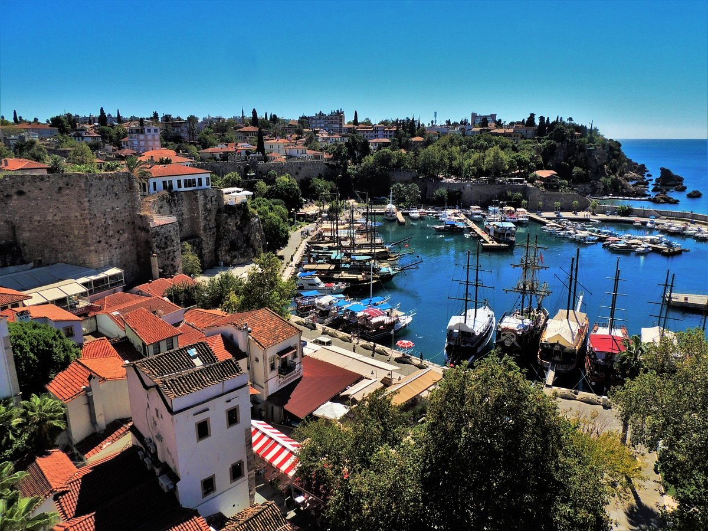

Kaleici
Dating back to Roman times, Antalya’s seafront historic core contains many of the city's must-sees.
Lower Duden Waterfalls
The Lower Duden Waterfalls is a spectacular cascade that occurs as the Duden River spills off the Antalya City cliffs into the sea.

Termessos
Approximately 34 kilometers northwest of Antalya lies Termessos and the beautiful Güllük Dagi National Park.